Author：wnagzihxa1n
Mail：tudouboom@163.com
自从接触病毒分析以来，一直想搞一搞沙箱去撸安卓的APK，先撸一波比较著名的布谷鸟沙箱，本文不是教程，纯粹是我在折腾过程中的记录，对的错的全都记录下来了
一开始并没有什么想法和头绪去搭建一个沙箱，整个想法也只是知道布谷鸟沙箱是一个开源的东西，可以学习源码然后搞搞搞
刚好有一台可以随意折腾的笔记本，250G的硬盘，4G内存条，i5，跑沙箱应该是没问题的
想着Windows 10跑这东西会不稳定，容易崩什么什么的，决定使用Windows 7，鉴于现在的网络环境，能找到官方版本的纯净系统确实不容易，MSDN上面很多链接都已经下载不了了，于是找了老司机弄了一个Windows 7旗舰版，装完后，想装Visual Studio的时候，发现不支持VS2017，也不支持VS2015，本来想委曲求全装个VS2013的，结果依旧不支持。。。。。。
于是开始搜网友们的文章，在FreeBuf上搜到一篇比较完整的
原来宿主机官方推荐的是Ubuntu。。。。。。
接下来的环境搭建过程是跟着这篇文章进行的
我使用的环境如下
手上有一个Ubuntu 16.04的安装盘可以直接用，又装了一波系统，Ubuntu安装完后，安装依赖
sudo apt-get install python python-pip python-dev libffi-dev libssl-dev
Cuckoo SandBox自带一个基于Django的Web管理系统，可以直接在Web端进行上传样本，查看结果等操作，需要安装MongoDB
sudo apt-get install mongodb
接下来是一波依赖，这个在不同的版本里命名也不一样，我目前下载到的是Cuckoo 2.0.3，命名为requires.txt，存储在Cuckoo.egg-info下面，而且不同版本的内容也有可能不是一样，我这里和FreeBuf上的文章就有比较大的出入
alembic==0.8.8
androguard==3.0
beautifulsoup4==4.5.3
chardet==2.3.0
click==6.6
django==1.8.4
django_extensions==1.6.7
dpkt==1.8.7
elasticsearch==5.3.0
flask==0.10.1
flask-sqlalchemy==2.1
httpreplay==0.2
jinja2==2.8
jsbeautifier==1.6.2
oletools==0.42
peepdf==0.3.4
pefile2==1.2.11
pillow==3.2
pymisp==2.4.54
pymongo==3.0.3
python-dateutil==2.4.2
python-magic==0.4.12
sflock>=0.2.12, <0.3
sqlalchemy==1.0.8
wakeonlan==0.2.2
m2crypto==0.24.0
[:sys_platform == 'darwin']
requests==2.13.0
[:sys_platform == 'linux2']
requests[security]==2.13.0
scapy==2.3.2
[:sys_platform == 'win32']
requests==2.13.0
[distributed]
gevent==1.1.1
psycopg2==2.6.2
[postgresql]
psycopg2==2.6.2
[weasyprint]
weasyprint==0.36
一共有两处需要处理，第一处是pefile2，听说这玩意需要翻墙下载，两种方法，一种是全部使用扶梯，一种是单独使用扶梯，但是我在安装的时候并没有被墙
第二处要处理的是后面的一些系统版本不同的配置选项
[:sys_platform == 'darwin']
requests==2.13.0
[:sys_platform == 'linux2']
requests[security]==2.13.0
scapy==2.3.2
[:sys_platform == 'win32']
requests==2.13.0
[distributed]
gevent==1.1.1
psycopg2==2.6.2
[postgresql]
psycopg2==2.6.2
[weasyprint]
weasyprint==0.36
这个是Python的sys.platform，前面仨是平台
Linux 2.x & Linux 3.x ===> linux2
Windows =================> Win32
Windows/Cygwin ==========> cygwin
Mac OS X ================> darwin
OS/2 ====================> os2
OS/2 EMX ================> os2emx
RiscOS ==================> riscos
AtheOS ==================> atheos
执行安装依赖，报错
wnagzihxa1n@toT0C:~$ pip install -r requires.txt
Invalid requirement: '[:sys_platform == 'darwin']'
Traceback (most recent call last):
File "/home/wnagzihxa1n/.local/lib/python2.7/site-packages/pip/req/req_install.py", line 82, in __init__
req = Requirement(req)
File "/home/wnagzihxa1n/.local/lib/python2.7/site-packages/pip/_vendor/packaging/requirements.py", line 96, in __init__
requirement_string[e.loc:e.loc + 8]))
InvalidRequirement: Invalid requirement, parse error at "u'[:sys_pl'"
以前并没有过多的接触过这些问题，不是很清楚依赖的问题，我在装完系统后，直接升级了一波，不过并没有更新源
试了一些方法，并没有解决这个问题，于是强行的删掉了那两个其它平台的选项
下面的三个，分别是分布式，不知道啥玩意，把HTML转为PDF，最终的requires.txt
alembic==0.8.8
androguard==3.0
beautifulsoup4==4.5.3
chardet==2.3.0
click==6.6
django==1.8.4
django_extensions==1.6.7
dpkt==1.8.7
elasticsearch==5.3.0
flask==0.10.1
flask-sqlalchemy==2.1
httpreplay==0.2
jinja2==2.8
jsbeautifier==1.6.2
oletools==0.42
peepdf==0.3.4
pefile2==1.2.11
pillow==3.2
pymisp==2.4.54
pymongo==3.0.3
python-dateutil==2.4.2
python-magic==0.4.12
sflock>=0.2.12, <0.3
sqlalchemy==1.0.8
wakeonlan==0.2.2
m2crypto==0.24.0
requests[security]==2.13.0
scapy==2.3.2
gevent==1.1.1
psycopg2==2.6.2
weasyprint==0.36
然后执行
wnagzihxa1n@toT0C:~$ pip install -r requires.txt
就很愉快了，不过最后报了一个错
Complete output from command python setup.py egg_info:
running egg_info
creating pip-egg-info/psycopg2.egg-info
writing pip-egg-info/psycopg2.egg-info/PKG-INFO
writing top-level names to pip-egg-info/psycopg2.egg-info/top_level.txt
writing dependency_links to pip-egg-info/psycopg2.egg-info/dependency_links.txt
writing manifest file 'pip-egg-info/psycopg2.egg-info/SOURCES.txt'
warning: manifest_maker: standard file '-c' not found
Error: pg_config executable not found.
Please add the directory containing pg_config to the PATH
or specify the full executable path with the option:
python setup.py build_ext --pg-config /path/to/pg_config build ...
or with the pg_config option in 'setup.cfg'.
----------------------------------------
Command "python setup.py egg_info" failed with error code 1 in /tmp/pip-build-xEzsyw/psycopg2/
这就很尴尬了，我又去搜啊搜，原来是psycopg2需要先安装postgresql的问题，暂时不需要这玩意，就从依赖中去掉了，继续安装，后面还会安装一大堆的东西。。。。。。
继续装啊装，看起来依旧很爽，然而最后依旧报一大堆的错误，想着难道是最后那个HTML转PDF的玩意报错了？？？？？？
反正我现在能跑起来就行，转啥PDF，果断抛弃。。。。。。
继续报错。。。。。。
决定开始看官方文档
官方文档会在后面的文章里专门翻译成中文版
这里只来一波安装的过程
wnagzihxa1n@toT0C:~$ sudo apt-get install python python-pip python-dev libffi-dev libssl-dev
wnagzihxa1n@toT0C:~$ sudo apt-get install python-virtualenv python-setuptools
wnagzihxa1n@toT0C:~$ sudo apt-get install libjpeg-dev zlib1g-dev swig
wnagzihxa1n@toT0C:~$ sudo apt-get install mongodb
wnagzihxa1n@toT0C:~$ sudo apt-get install postgresql libpq-dev
wnagzihxa1n@toT0C:~$ sudo apt-get install qemu-kvm libvirt-bin ubuntu-vm-builder bridge-utils python-libvirt
wnagzihxa1n@toT0C:~$ sudo pip install XenAPI
装完了上面这些，一路愉快，再来走一波requires.txt文件，甚是愉快的跑完了
Installing collected packages: pillow, pythonaes, peepdf, pefile2, idna, asn1crypto, enum34, ipaddress, pycparser, cffi, cryptography, pyOpenSSL, requests, python-dateutil, functools32, jsonschema, pymisp, pymongo, python-magic, olefile, pycrypto, sflock, wakeonlan, m2crypto, scapy, greenlet, gevent
Running setup.py install for pillow ... done
Running setup.py install for pythonaes ... done
Running setup.py install for peepdf ... done
Running setup.py install for pefile2 ... done
Running setup.py install for pycparser ... done
Running setup.py install for cryptography ... done
Running setup.py install for functools32 ... done
Running setup.py install for pymisp ... done
Running setup.py install for pymongo ... done
Running setup.py install for python-magic ... done
Running setup.py install for olefile ... done
Running setup.py install for pycrypto ... done
Running setup.py install for sflock ... done
Running setup.py install for wakeonlan ... done
Running setup.py install for m2crypto ... done
Running setup.py install for scapy ... done
Running setup.py install for gevent ... done
Successfully installed asn1crypto-0.22.0 cffi-1.10.0 cryptography-1.9 enum34-1.1.6 functools32-3.2.3.post2 gevent-1.1.1 greenlet-0.4.12 idna-2.5 ipaddress-1.0.18 jsonschema-2.6.0 m2crypto-0.24.0 olefile-0.43 peepdf-0.3.4 pefile2-1.2.11 pillow-3.2.0 pyOpenSSL-17.0.0 pycparser-2.17 pycrypto-2.6.1 pymisp-2.4.54 pymongo-3.0.3 python-dateutil-2.4.2 python-magic-0.4.12 pythonaes-1.0 requests-2.13.0 scapy-2.3.2 sflock-0.2.14 wakeonlan-0.2.2
在依赖的问题解决后，开始安装Virtual Box
wnagzihxa1n@toT0C:~$ echo deb http://download.virtualbox.org/virtualbox/debian xenial contrib | sudo tee -a /etc/apt/sources.list.d/virtualbox.list
wnagzihxa1n@toT0C:~$ wget -q https://www.virtualbox.org/download/oracle_vbox_2016.asc -O- | sudo apt-key add -
wnagzihxa1n@toT0C:~$ sudo apt-get update
安装Virtual Box的时候出了点小问题，两个软件没装
wnagzihxa1n@toT0C:~$ sudo apt-get install virtualbox-5.1
Reading package lists... Done
Building dependency tree
Reading state information... Done
Some packages could not be installed. This may mean that you have
requested an impossible situation or if you are using the unstable
distribution that some required packages have not yet been created
or been moved out of Incoming.
The following information may help to resolve the situation:
The following packages have unmet dependencies:
virtualbox-5.1 : Depends: libpng12-0 (>= 1.2.13-4) but it is not installable
Recommends: libsdl-ttf2.0-0 but it is not going to be installed
E: Unable to correct problems, you have held broken packages.
一个个来装，首先是libsdl-ttf2.0-0
wnagzihxa1n@toT0C:~$ sudo apt-get install libsdl-ttf2.0-0
第二个我这里需要先添加源
deb http://cz.archive.ubuntu.com/ubuntu xenial main
然后安装即可
wnagzihxa1n@toT0C:~$ sudo apt-get install libpng12-0
在做好了这两个的安装后，继续安装Virtual Box
wnagzihxa1n@toT0C:~$ sudo apt-get install virtualbox-5.1
有些恶意样本会有网络请求，回连等行为，所以我们需要进行抓包操作，获取到它的数据包，布谷鸟使用的是tcpdump
wnagzihxa1n@toT0C:~$ sudo apt-get install tcpdump apparmor-utils
因为tcpdump需要Root权限，所以还需要简单设置一下
wnagzihxa1n@toT0C:~$ sudo aa-disable /usr/sbin/tcpdump
Disabling /usr/sbin/tcpdump.
wnagzihxa1n@toT0C:~$ sudo setcap cap_net_raw,cap_net_admin=eip /usr/sbin/tcpdump
wnagzihxa1n@toT0C:~$ getcap /usr/sbin/tcpdump
/usr/sbin/tcpdump = cap_net_admin,cap_net_raw+eip
启用内存镜像分析，安装volatility
wnagzihxa1n@toT0C:~$ sudo apt-get install volatility
安装M2Crypto，文档上说如果系统中存在SWIG则Cuckoo会自动安装上M2Crypto
wnagzihxa1n@toT0C:~$ sudo apt-get install swig
安装回显来看我的系统已经装上了这玩意
然后猛然间发现还有几个软件没有装，ssdeep是一个关于模糊哈希的玩意，虽然不知道都是干啥的，但是看到其它师傅文章里写了，就先装一波
wnagzihxa1n@toT0C:~$ sudo apt-get install ssdeep python-magic
wnagzihxa1n@toT0C:~$ sudo pip install bottle
还有一个pydeep，有一个DeepPy是Python的深度学习框架，两者应该不是一样的，先安装依赖
wnagzihxa1n@toT0C:~$ sudo apt-get install build-essential git libpcre3 libpcre3-dev libpcre++-dev python-dev libfuzzy-dev
安装pydeep
wnagzihxa1n@toT0C:~$ git clone https://github.com/kbandla/pydeep.git pydeep
wnagzihxa1n@toT0C:~$ sudo mv pydeep /opt/
wnagzihxa1n@toT0C:~$ cd /opt/pydeep
wnagzihxa1n@toT0C:/opt/pydeep$ ls
INSTALL LICENSE pydeep.c README.md setup.py tests
wnagzihxa1n@toT0C:/opt/pydeep$ python setup.py build
wnagzihxa1n@toT0C:/opt/pydeep$ sudo python setup.py install
安装yara，同样是先安装依赖
wnagzihxa1n@toT0C:~$ sudo apt-get install automake libtool make gcc
安装yara的时候需要注意，flex和bison两个包一定要安装
wnagzihxa1n@toT0C:/opt$ sudo apt-get install flex bison
wnagzihxa1n@toT0C:/opt$ sudo git clone https://github.com/VirusTotal/yara.git
wnagzihxa1n@toT0C:/opt$ cd yara
wnagzihxa1n@toT0C:/opt/yara$ sudo ./bootstrap.sh
wnagzihxa1n@toT0C:/opt/yara$ sudo ./configure
wnagzihxa1n@toT0C:/opt/yara$ sudo make
wnagzihxa1n@toT0C:/opt/yara$ sudo make install
wnagzihxa1n@toT0C:/opt/yara$ sudo make check
最后检查是否安装成功的时候，回显一部分如下
PASS: test-alignment
PASS: test-rules
PASS: test-pe
PASS: test-elf
PASS: test-version
PASS: test-exception
============================================================================
Testsuite summary for yara 3.6.0
============================================================================
# TOTAL: 6
# PASS: 6
# SKIP: 0
# XFAIL: 0
# FAIL: 0
# XPASS: 0
# ERROR: 0
============================================================================
如果报缺少OpenSSL的警告，需要安装，我这里没有遇到
wnagzihxa1n@toT0C:~$ sudo apt-get install libssl-dev
在上面的yara安装完成后，安装yara-python，我这里显示已经安装过了
wnagzihxa1n@toT0C:~$ sudo pip install yara-python
对于宿主机的配置就先到这里，接下里我们来安装虚拟机
为了简单起见，我们先安装一个XP系统，英文版的，现在这种环境完全不敢用中文的，包括Ubuntu宿主机也是纯英文版本的
Windows XP SP3 EN：ed2k://|file|en_windows_xp_professional_with_service_pack_3_x86_cd_x14-80428.iso|617756672|2A30BB63730F7887E1AC54363A8489C2|/
Product Key：HTXH6-2JJC4-CDB6C-X38B4-C3GF3
一路安装到底，然后进入XP系统，风风火火向前冲
为了便于交互，安装虚拟机增强工具
接下来设置共享目录，这个需要注意的一点是：共享目录的文件夹必须提前创建，不然点击不了那个OK
为了环境能够长期稳定，关闭自动更新

防火墙会拦截掉某些行为，所以需要关闭防火墙
搭建Python环境，下载2.7的版本，不过这个版本的XP内置的IE浏览器对于中文支持好像有问题，都是格子
安装完毕，把cuckoo/data/agent.py拷贝到Documents and Settings\$USERNAME\Start Menu\Programs\Startup\agent.pyw
换成.pyw后缀可以不弹出运行框
重启系统，运行netstat -an，可以看到:8000端口已经有监听了

配置网络是一件很重要的事
我们这里使用的是Host-Only模式，这样可以把全部的流量引到宿主机中，然后在宿主机进行数据的抓取分析
这里有点坑，我这的情况和那些文章里的描述都有些不同，于是单独去搜Virtual Box设置Host-Only模式
后来才发现一开始我在Virtual Box软件的界面去设置，结果发现要先启动虚拟机，然后在虚拟机的界面上File->>>>>下去设置
点进去后，进入NetWork，就和文章里的很像了

点击Host-Only，右边有个加号按钮，点击就会自动添加一个vboxnet0，然后我们双击进去可以看到它的配置是已经写好的

然后进入XP，设置IP以及网关掩码等
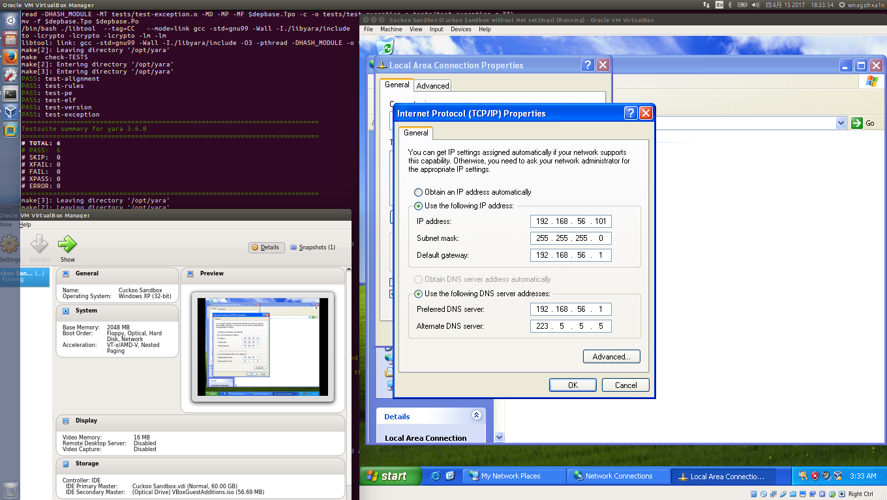
高高兴兴ping一发试试看，然而TimeOut了。。。。。。
后来一激灵，突然想起来刚才在Virtual Box界面有一个网络的设置，于是回去把那个给改了，原先如果不在虚拟机界面先添加vboxnet0网卡的话，这里的Name是no select，而且也没有选项，所以整个流程就是先开启虚拟机，在虚拟机的那个窗口进行虚拟机的网卡添加以及设置，设置完后，回到Virtual Box界面，设置Host-Only模式并且选择vboxnet0
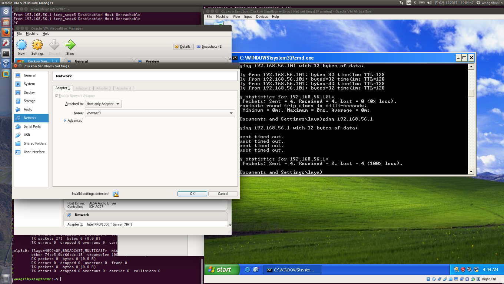
然后就可以互相ping通了
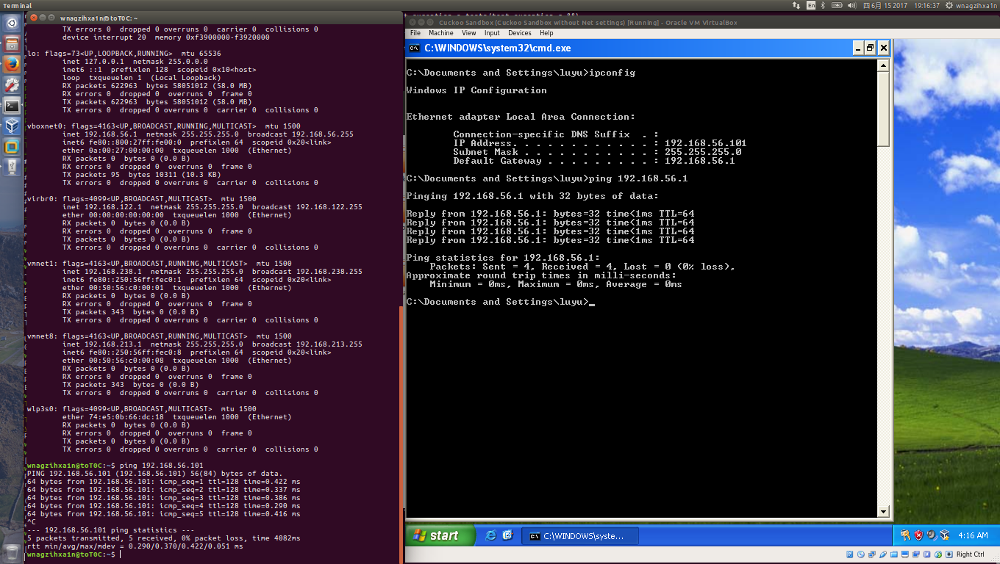
整个世界都美好了~~
至于ipv6那一栏，暂时就不管了，反正现在能ping通就是很棒棒了
ping通了宿主机，来ping一波我的博客看看
宿主机可以ping通，然而虚拟机ping不通我的博客3
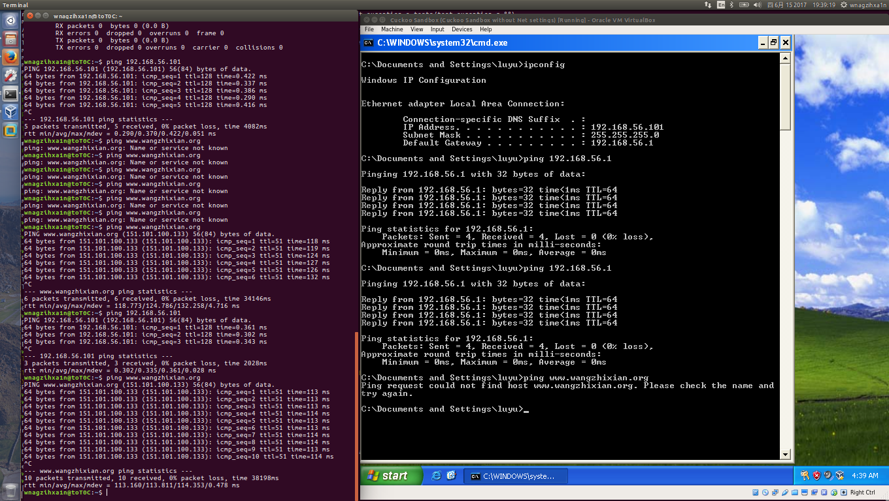
接下来需要进一步设置转发，经常能碰到有回连发数据或者是远程控制下发指令的样本，所以能上网是很重要的
打开/etc/sysctl.conf
wnagzihxa1n@toT0C:~$ sudo gedit /etc/sysctl.conf
将标注出来的地方前面的#注释符去掉

然后使其生效
wnagzihxa1n@toT0C:~$ sudo sysctl -p /etc/sysctl.conf
接下来配置iptables，这里的-o选项后面需要跟着自己电脑的网卡名，不是所有都是eth0
wnagzihxa1n@toT0C:~$ sudo iptables -A FORWARD -o enp0s25 -i vboxnet0 -s 192.168.56.0/24 -m conntrack --ctstate NEW -j ACCEPT
wnagzihxa1n@toT0C:~$ sudo iptables -A FORWARD -m conntrack --ctstate ESTABLISHED,RELATED -j ACCEPT
wnagzihxa1n@toT0C:~$ sudo iptables -A POSTROUTING -t nat -j MASQUERADE
wnagzihxa1n@toT0C:~$ sudo sysctl -w net.ipv4.ip_forward=1
然后我们再来ping一波，妥妥的~~~
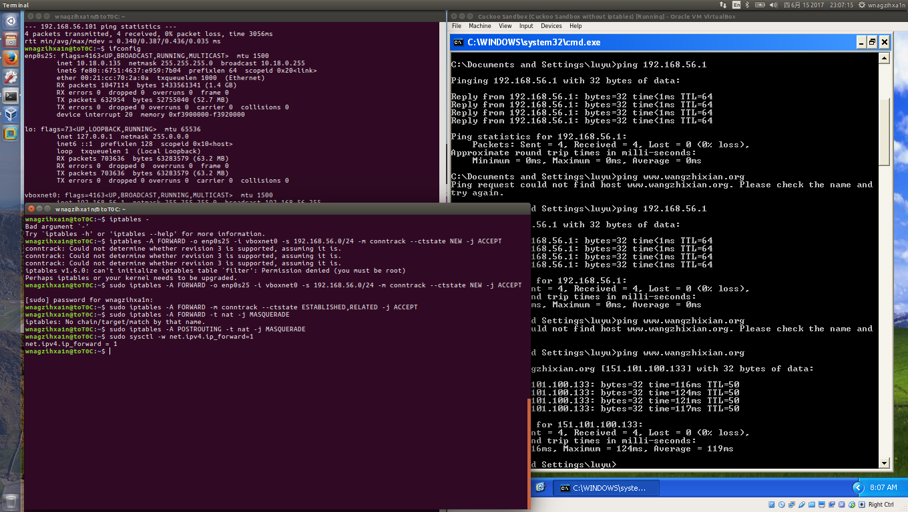
此时给虚拟机打个快照，功能如下
确保到这一步都完成，接下来继续搞宿主机
安装requests模块
wnagzihxa1n@toT0C:~$ git clone https://github.com/kennethreitz/requests.git requests
wnagzihxa1n@toT0C:~$ cd requests
wnagzihxa1n@toT0C:~$ sudo python setup.py install
配置沙箱，需要修改virtualbox.conf，这个文件在我这个版本路径如下
cuckoo/data-private/cwd/conf/virtualbox.conf
对照着一个个改，前面有(optional)选项的就不要动了，前面的英文也可以仔细读一读
[virtualbox]
# Specify which VirtualBox mode you want to run your machines on.
# Can be "gui" or "headless". Please refer to VirtualBox's official
# documentation to understand the differences.
mode = headless
# Path to the local installation of the VBoxManage utility.
path = /usr/bin/vboxmanage
# If you are running Cuckoo on Mac OS X you have to change the path as follows:
# path = /Applications/VirtualBox.app/Contents/MacOS/VBoxManage
# Default network interface.
interface = vboxnet0
# Specify a comma-separated list of available machines to be used. For each
# specified ID you have to define a dedicated section containing the details
# on the respective machine. (E.g. cuckoo1,cuckoo2,cuckoo3)
machines = Cuckoo Sandbox
{% for machine in config("virtualbox:virtualbox:machines") %}
[{{ machine }}]
# Specify the label name of the current machine as specified in your
# VirtualBox configuration.
label = Cuckoo Sandbox
# Specify the operating system platform used by current machine
# [windows/darwin/linux].
platform = windows
# Specify the IP address of the current virtual machine. Make sure that the
# IP address is valid and that the host machine is able to reach it. If not,
# the analysis will fail.
ip = 192.168.56.101
[honeyd]
label = honeyd
platform = linux
ip = 192.168.56.102
tags = service, honeyd
options = nictrace noagent
由于我们分析时需要使用到MongoDB数据库，所以还需要再创建一个数据库
修改reporting.conf文件
cuckoo/data-private/cwd/conf/reporting.conf
修改一部分就行，这里
[mongodb]
enabled = yes
host = 127.0.0.1
port = 27017
db = cuckoo
store_memdump = yes
paginate = 100
# MongoDB authentication (optional).
username = {{ reporting.mongodb.username }}
password = {{ reporting.mongodb.password }}
不知道跑起来效果怎么样，先来跑一波
我突然发现，这个文件夹是要安装的。。。。。。
尼玛我说怎么文章里各种cuckoo.py，我这里只有一个setup.py。。。。。。
我还得先安装。。。。。。
于是重新使用pip进行安装，好在压缩包已经在本地了，直接使用文件安装
wnagzihxa1n@toT0C:~$ pip install Cuckoo-2.0.3.tar.gz
在线安装经常会Read Time Out
然后安装完，使用cuckoo -d跑起来，第一次跑起来提示我说这是第一次，正在配置什么什么的。。。。。。
wnagzihxa1n@toT0C:~$ cuckoo -d
_|
_|_|_| _| _| _|_|_| _| _| _|_| _|_|
_| _| _| _| _|_| _| _| _| _|
_| _| _| _| _| _| _| _| _| _|
_|_|_| _|_|_| _|_|_| _| _| _|_| _|_|
Cuckoo Sandbox 2.0.3
www.cuckoosandbox.org
Copyright (c) 2010-2017
=======================================================================
Welcome to Cuckoo Sandbox, this appears to be your first run!
We will now set you up with our default configuration.
You will be able to see and modify the Cuckoo configuration,
Yara rules, Cuckoo Signatures, and much more to your likings
by exploring the /home/wnagzihxa1n/.cuckoo directory.
Among other configurable items of most interest is the
new location for your Cuckoo configuration:
/home/wnagzihxa1n/.cuckoo/conf
=======================================================================
Cuckoo has finished setting up the default configuration.
Please modify the default settings where required and
start Cuckoo again (by running `cuckoo` or `cuckoo -d`).
可以注意到关键的配置文件路径
/home/wnagzihxa1n/.cuckoo
我们需要进入这个文件夹，重新进行virtualbox.conf和reporting.conf文件的配置
首先是virtualbox.conf，因吹斯听的是，第一次启动时已经帮我们配置好了一部分，我们要修改的地方是machines和label，注意label前面的[]里也要改
[virtualbox]
# Specify which VirtualBox mode you want to run your machines on.
# Can be "gui" or "headless". Please refer to VirtualBox's official
# documentation to understand the differences.
mode = headless
# Path to the local installation of the VBoxManage utility.
path = /usr/bin/VBoxManage
# If you are running Cuckoo on Mac OS X you have to change the path as follows:
# path = /Applications/VirtualBox.app/Contents/MacOS/VBoxManage
# Default network interface.
interface = vboxnet0
# Specify a comma-separated list of available machines to be used. For each
# specified ID you have to define a dedicated section containing the details
# on the respective machine. (E.g. cuckoo1,cuckoo2,cuckoo3)
machines = Cuckoo Sandbox
[Cuckoo Sandbox]
# Specify the label name of the current machine as specified in your
# VirtualBox configuration.
label = Cuckoo Sandbox
# Specify the operating system platform used by current machine
# [windows/darwin/linux].
platform = windows
# Specify the IP address of the current virtual machine. Make sure that the
# IP address is valid and that the host machine is able to reach it. If not,
# the analysis will fail.
ip = 192.168.56.101
# (Optional) Specify the snapshot name to use. If you do not specify a snapshot
# name, the VirtualBox MachineManager will use the current snapshot.
# Example (Snapshot1 is the snapshot name):
snapshot =
# (Optional) Specify the name of the network interface that should be used
# when dumping network traffic from this machine with tcpdump. If specified,
# overrides the default interface specified in auxiliary.conf
# Example (vboxnet0 is the interface name):
interface =
# (Optional) Specify the IP of the Result Server, as your virtual machine sees it.
# The Result Server will always bind to the address and port specified in cuckoo.conf,
# however you could set up your virtual network to use NAT/PAT, so you can specify here
# the IP address for the Result Server as your machine sees it. If you don't specify an
# address here, the machine will use the default value from cuckoo.conf.
# NOTE: if you set this option you have to set result server IP to 0.0.0.0 in cuckoo.conf.
# Example:
resultserver_ip =
# (Optional) Specify the port for the Result Server, as your virtual machine sees it.
# The Result Server will always bind to the address and port specified in cuckoo.conf,
# however you could set up your virtual network to use NAT/PAT, so you can specify here
# the port for the Result Server as your machine sees it. If you don't specify a port
# here, the machine will use the default value from cuckoo.conf.
# Example:
resultserver_port =
# (Optional) Set your own tags. These are comma separated and help to identify
# specific VMs. You can run samples on VMs with tag you require.
tags =
# Mostly unused for now. Please don't fill it out.
options =
# (Optional) Specify the OS profile to be used by volatility for this
# virtual machine. This will override the guest_profile variable in
# memory.conf which solves the problem of having multiple types of VMs
# and properly determining which profile to use.
osprofile =
[honeyd]
# For more information on this VM please refer to the "services" section of
# the conf/auxiliary.conf configuration file. This machine is a bit special
# in the way that its used as an additional VM for an analysis.
# *NOTE* that if this functionality is used, the VM should be registered in
# the "machines" list in the beginning of this file.
label = honeyd
platform = linux
ip = 192.168.56.102
# The tags should at least contain "service" and the name of this service.
# This way the services auxiliary module knows how to find this particular VM.
tags = service, honeyd
# Not all services actually have a Cuckoo Agent running in the VM, for those
# services one can specify the "noagent" option so Cuckoo will just wait until
# the end of the analysis instead of trying to connect to the non-existing
# Cuckoo Agent. We can't really intercept any inter-VM communication from the
# host / gateway so in order to dump traffic between VMs we have to use a
# different network dumping approach. For this machine we use the "nictrace"
# functionality from VirtualBox (which is basically their internal tcpdump)
# and thus properly dumps inter-VM traffic.
options = nictrace noagent
再打开reporting.conf，除了第一个改为yes之外，其余都自己配置好了，原来是自动配置的，我还以为那些文章里的参数都是作者自己写的
[mongodb]
enabled = yes
host = 127.0.0.1
port = 27017
db = cuckoo
store_memdump = yes
paginate = 100
# MongoDB authentication (optional).
username =
password =
再次运行cuckoo -d
报了几个错
2017-06-16 17:21:47,131 [cuckoo.core.startup] WARNING: Unable to import yara (install with `pip install yara-python==3.5.0`)
CuckooConfigurationError: Option Cuckoo Sandbox is not found in configuration
2017-06-16 17:21:47,131 [cuckoo] WARNING: It appears that you haven't loaded any Cuckoo Signatures. Signatures are highly recommended and improve & enrich the information extracted during an analysis. They also make up for the analysis score that you see in the Web Interface - so, pretty important!
2017-06-16 17:21:47,132 [cuckoo] WARNING: You'll be able to fetch all the latest Cuckoo Signaturs, Yara rules, and more goodies by running the following command:
2017-06-16 17:21:47,132 [cuckoo] INFO: $ cuckoo community
2017-06-16 17:21:47,133 [cuckoo.core.resultserver] DEBUG: ResultServer running on 192.168.56.1:2042.
2017-06-16 17:21:47,136 [cuckoo.core.scheduler] INFO: Using "virtualbox" as machine manager
CuckooConfigurationError: Option Cuckoo Sandbox is not found in configuration
一个个解决，第一个无法导入yara先不解决
第二个它提示让我们输入cuckoo community这个命令
wnagzihxa1n@toT0C:~$ cuckoo community
2017-06-16 17:22:42,634 [cuckoo.apps.apps] INFO: Downloading.. https://github.com/cuckoosandbox/community/archive/master.tar.gz
2017-06-16 17:23:09,312 [cuckoo] INFO: Finished fetching & extracting the community files!
那么第三个问题
这就是我刚才在前面说的，label前面的[]要修改为虚拟机的名字，默认为[cuckoo1]
这几个问题处理好后，再次运行cuckoo -d
dbox is not found in configuration
wnagzihxa1n@toT0C:~$ sudo cuckoo -d
_____________________________________/\/\_______________________________
___/\/\/\/\__/\/\__/\/\____/\/\/\/\__/\/\__/\/\____/\/\/\______/\/\/\___
_/\/\________/\/\__/\/\__/\/\________/\/\/\/\____/\/\__/\/\__/\/\__/\/\_
_/\/\________/\/\__/\/\__/\/\________/\/\/\/\____/\/\__/\/\__/\/\__/\/\_
___/\/\/\/\____/\/\/\/\____/\/\/\/\__/\/\__/\/\____/\/\/\______/\/\/\___
________________________________________________________________________
Cuckoo Sandbox 2.0.3
www.cuckoosandbox.org
Copyright (c) 2010-2017
Checking for updates...
You're good to go!
2017-06-16 17:30:24,248 [cuckoo.core.startup] DEBUG: Imported modules...
2017-06-16 17:30:24,258 [cuckoo.core.startup] DEBUG: Imported "auxiliary" modules:
2017-06-16 17:30:24,259 [cuckoo.core.startup] DEBUG: |-- MITM
2017-06-16 17:30:24,259 [cuckoo.core.startup] DEBUG: |-- Reboot
2017-06-16 17:30:24,260 [cuckoo.core.startup] DEBUG: |--
..................................................................................
2017-06-16 17:30:24,371 [cuckoo.core.startup] DEBUG: |-- MISP
2017-06-16 17:30:24,371 [cuckoo.core.startup] DEBUG: |-- Moloch
2017-06-16 17:30:24,371 [cuckoo.core.startup] DEBUG: |-- MongoDB
2017-06-16 17:30:24,371 [cuckoo.core.startup] DEBUG: |-- Notification
2017-06-16 17:30:24,372 [cuckoo.core.startup] DEBUG: `-- SingleFile
2017-06-16 17:30:24,372 [cuckoo.core.startup] DEBUG: Checking for locked tasks..
2017-06-16 17:30:24,387 [cuckoo.core.startup] DEBUG: Checking for pending service tasks..
2017-06-16 17:30:24,405 [cuckoo.core.startup] WARNING: Unable to import yara (install with `pip install yara-python==3.5.0`)
2017-06-16 17:30:24,408 [cuckoo.core.resultserver] DEBUG: ResultServer running on 192.168.56.1:2042.
2017-06-16 17:30:24,410 [cuckoo.core.scheduler] INFO: Using "virtualbox" as machine manager
2017-06-16 17:30:24,873 [cuckoo.machinery.virtualbox] DEBUG: Stopping vm Cuckoo Sandbox
2017-06-16 17:30:26,210 [cuckoo.machinery.virtualbox] DEBUG: Restoring virtual machine Cuckoo Sandbox to its current snapshot
2017-06-16 17:30:26,325 [cuckoo.core.scheduler] INFO: Loaded 1 machine/s
2017-06-16 17:30:26,348 [cuckoo.core.scheduler] INFO: Waiting for analysis tasks.
跑起来了，喜大普奔啊！！！！！！
不过跑起来后，咋用啊这玩意。。。。。。
后来发现下面还可以输入命令
切换到Web界面，使用如下界面，这里需要注意，cuckoo -d是一个Terminal，而Web界面需要重新使用一个Terminal去执行
wnagzihxa1n@toT0C:~$ cuckoo web runserver
Performing system checks...
System check identified no issues (0 silenced).
June 16, 2017 - 18:21:28
Django version 1.8.4, using settings 'cuckoo.web.web.settings'
Starting development server at http://127.0.0.1:8000/
Quit the server with CONTROL-C.
[16/Jun/2017 18:21:48] "GET / HTTP/1.1" 200 25191
[16/Jun/2017 18:21:48] "GET /static/js/cuckoo/loader.js HTTP/1.1" 200 1853
[16/Jun/2017 18:21:48] "GET /static/js/handlebars-templates.js HTTP/1.1" 200 44009
[16/Jun/2017 18:21:48] "GET /static/js/hexdump.js HTTP/1.1" 200 6054
[16/Jun/2017 18:21:48] "GET /static/css/vendor.css HTTP/1.1" 200 152014
[16/Jun/2017 18:21:48] "GET /static/js/cuckoo/analysis_sidebar.js HTTP/1.1" 200 3357
[16/Jun/2017 18:21:48] "GET /static/css/main.css HTTP/1.1" 200 426343
[16/Jun/2017 18:21:48] "GET /static/js/cuckoo/recent.js HTTP/1.1" 200 7392
[16/Jun/2017 18:21:48] "GET /static/js/cuckoo/submission.js HTTP/1.1" 200 85781
[16/Jun/2017 18:21:48] "GET /static/js/cuckoo/analysis_network.js HTTP/1.1" 200 20626
[16/Jun/2017 18:21:48] "GET /static/js/cuckoo/app.js HTTP/1.1" 200 26895
[16/Jun/2017 18:21:48] "GET /static/js/cuckoo/analysis_export.js HTTP/1.1" 200 952
[16/Jun/2017 18:21:48] "GET /static/js/cuckoo/analysis_feedback.js HTTP/1.1" 200 929
[16/Jun/2017 18:21:48] "GET /static/js/vendor.js HTTP/1.1" 200 2053163
[16/Jun/2017 18:21:48] "GET /static/graphic/cuckoo_inverse.png HTTP/1.1" 200 8158
[16/Jun/2017 18:21:48] "GET /static/graphic/cuckoo-coffee-cup.png HTTP/1.1" 200 35356
[16/Jun/2017 18:21:48] "GET /static/favicon-32x32.png HTTP/1.1" 200 1153
[16/Jun/2017 18:21:48] "GET /static/images/close.png HTTP/1.1" 200 280
[16/Jun/2017 18:21:48] "GET /static/images/loading.gif HTTP/1.1" 200 8476
[16/Jun/2017 18:21:48] "GET /static/images/next.png HTTP/1.1" 200 1350
[16/Jun/2017 18:21:48] "GET /static/images/prev.png HTTP/1.1" 200 1360
[16/Jun/2017 18:21:48] "GET /static/fonts/Roboto_normal_500_default.woff HTTP/1.1" 200 13248
[16/Jun/2017 18:21:48] "GET /static/fonts/Roboto_normal_400_default.woff HTTP/1.1" 200 13308
[16/Jun/2017 18:21:48] "GET /static/fonts/Roboto_normal_700_default.woff HTTP/1.1" 200 13348
[16/Jun/2017 18:21:48] "GET /static/fonts/fontawesome-webfont.woff2?v=4.7.0 HTTP/1.1" 200 77160
[16/Jun/2017 18:21:48] "POST /analysis/api/tasks/recent/ HTTP/1.1" 200 13
[16/Jun/2017 18:21:49] "GET /cuckoo/api/status HTTP/1.1" 200 564
使用网页访问
http://127.0.0.1:8000/

上传样本界面

上传个URL试试看效果，就拿自己博客试一波效果
在URL输入框输入域名，点击提交后，跳到下面这个界面
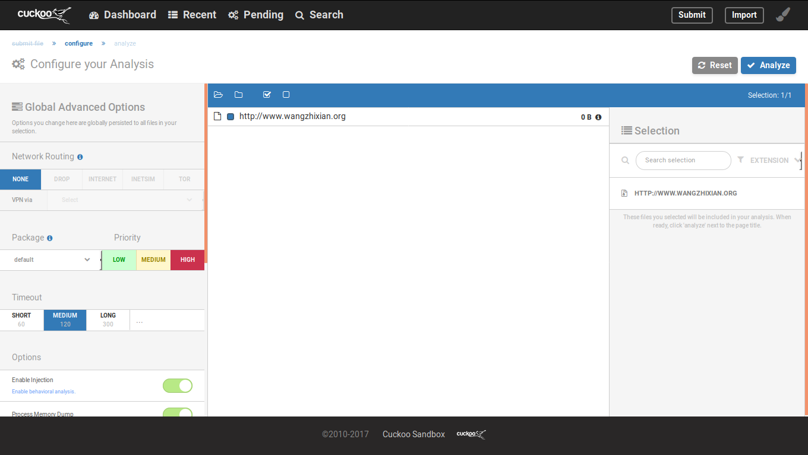
看到很多的配置可以选，我这里选择了一个HIGH之外其余默认
然后点击右上角Analyze，进入Pending

等待一会，同时可以点击查看Pending界面
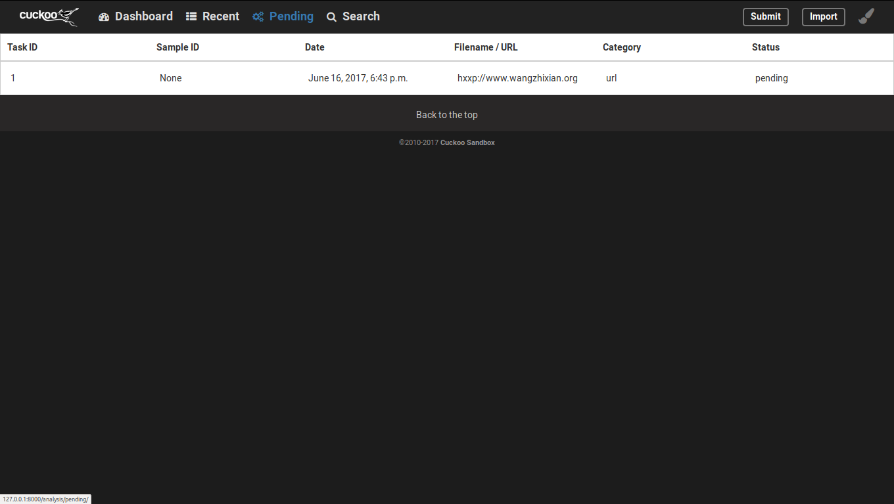
会看到running
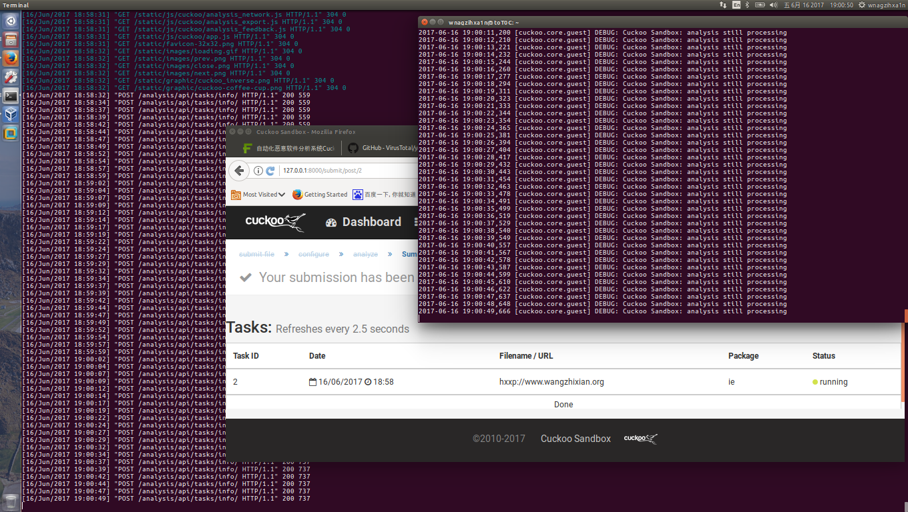
一会就回显示reported，同时Terminal也会显示完成

打开报告，界面很不错

往下拉，还有各种行为，网络请求等
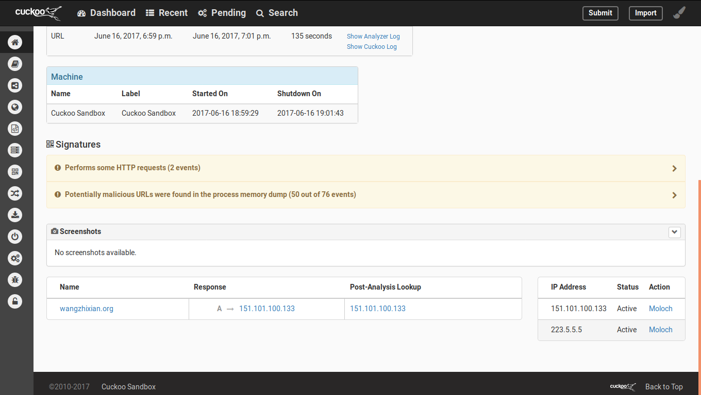
左边还有各种选项，可浮动，最下面的选项可以固定这个SideBar

找了老司机要了个PE文件，不过啥都没捕获到。。。。。。
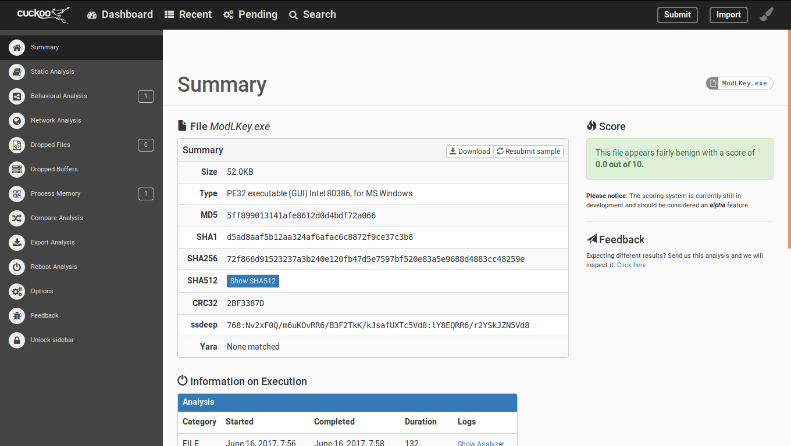
测试了一下APK，用的是蓝信的官方包
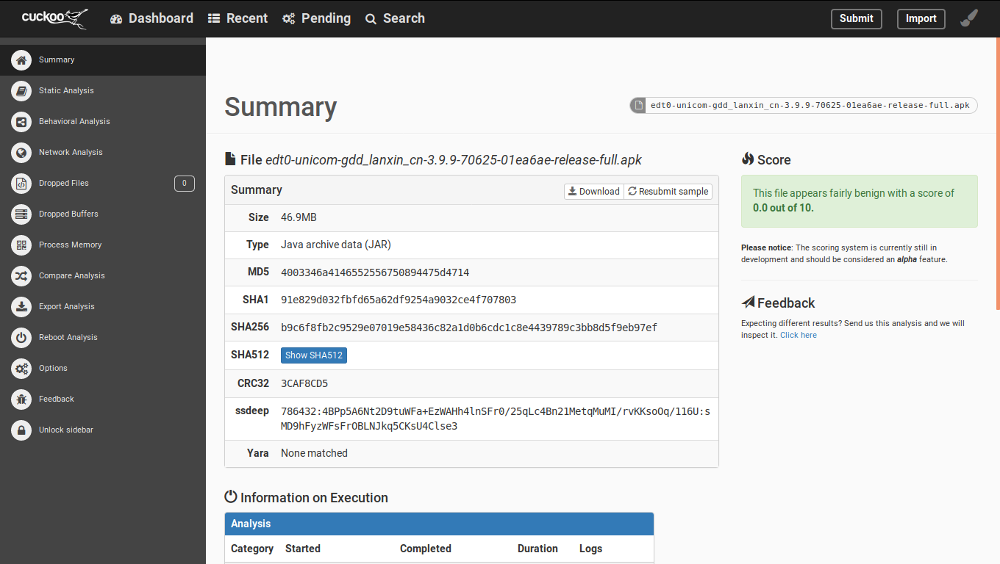
啥都没有。。。。。。
可能是因为这是正规的APK，所以我挑了一个明显的拦截马病毒，同样也是啥都没有。。。。。。
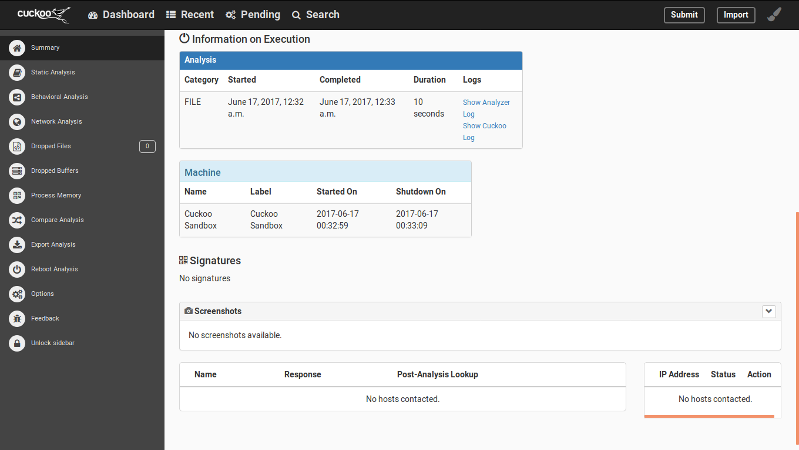
看了运行日志，发现了问题
2017-06-17 00:33:08,433 [cuckoo.core.guest] WARNING: Cuckoo Sandbox: analysis caught an exception
Traceback (most recent call last):
File "C:\tmpjyzhvd\analyzer.py", line 789, in <module>
success = analyzer.run()
File "C:\tmpjyzhvd\analyzer.py", line 577, in run
"not exist.".format(package_name))
CuckooError: Unable to import package "modules.packages.apk", does not exist.
本来还想多测几个，目前看来环境是残了。。。。。。
不过能跑起来还算是不错
接下来就是读官方文档和源码然后再修改沙箱了
最后一个重要的东西：重启宿主机之后，需要等一会，不然启动不了。。。。。。
其中的坑还得各位想搞的同学自己去折腾一遍，欢迎交流